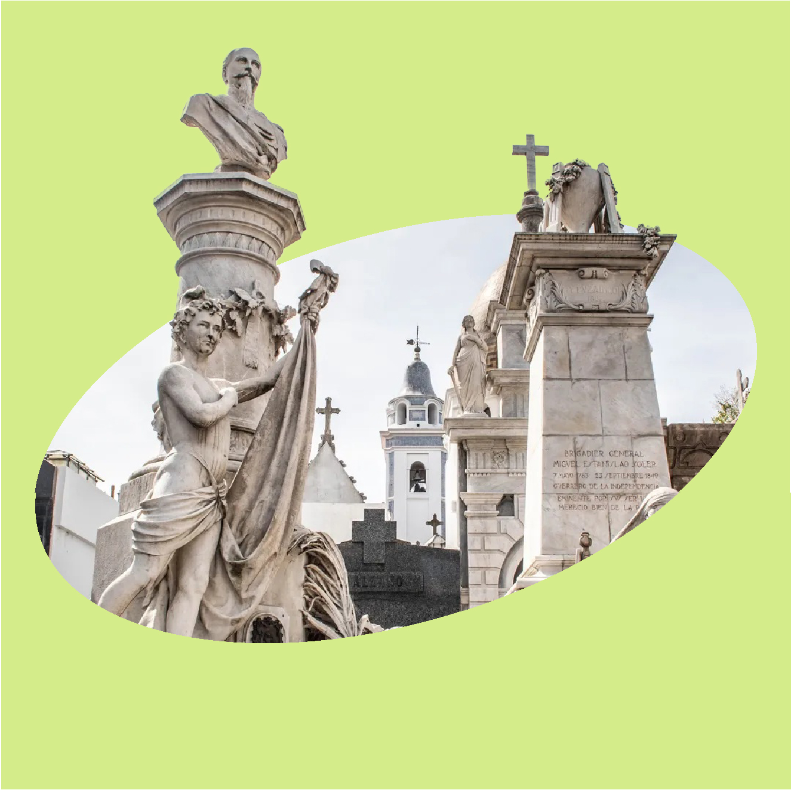
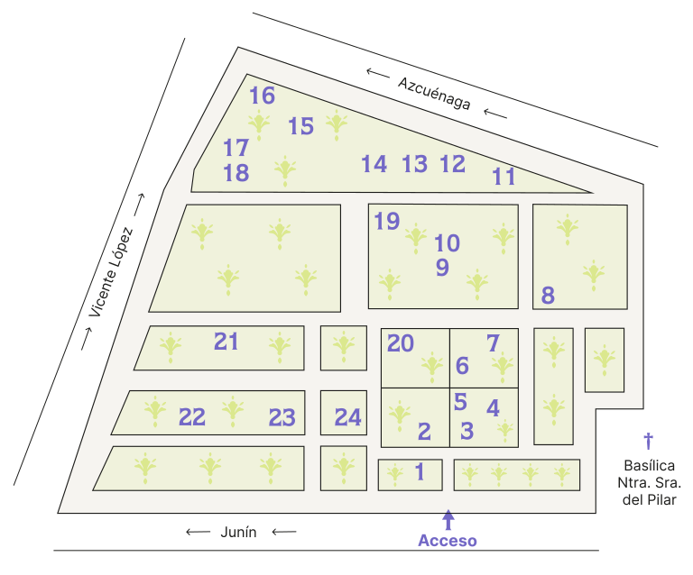
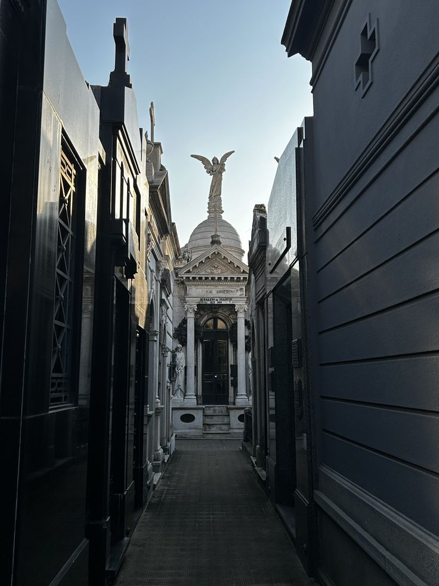
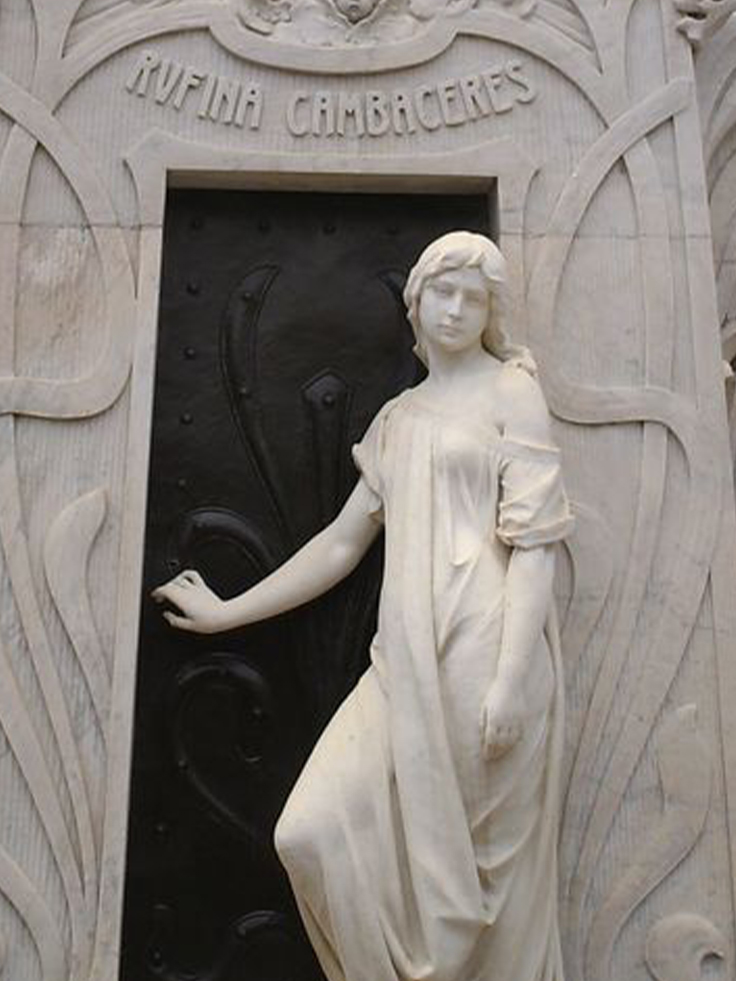
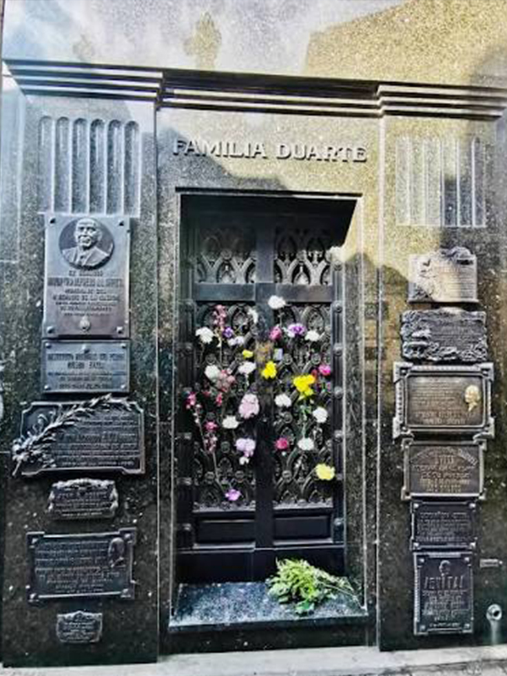
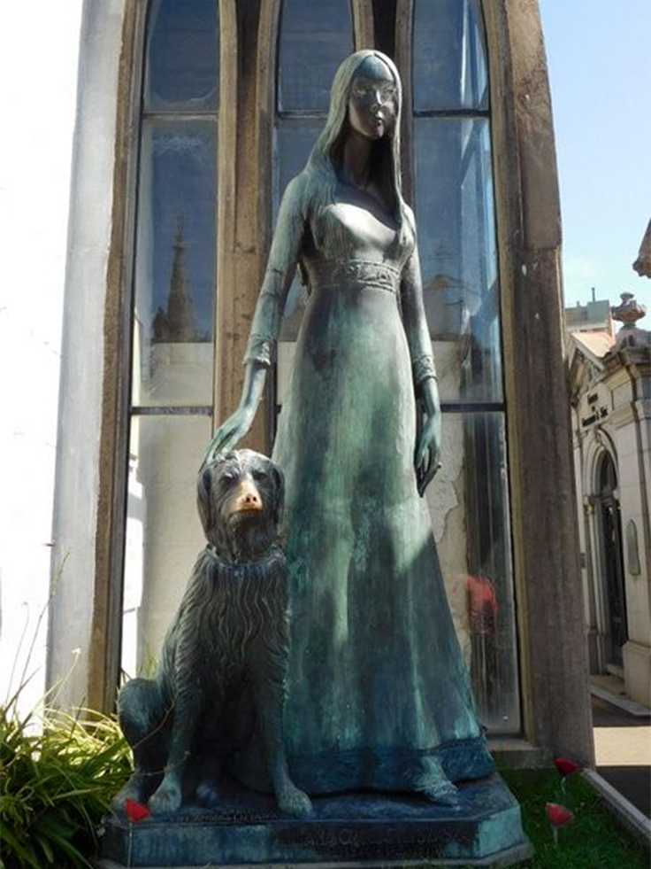
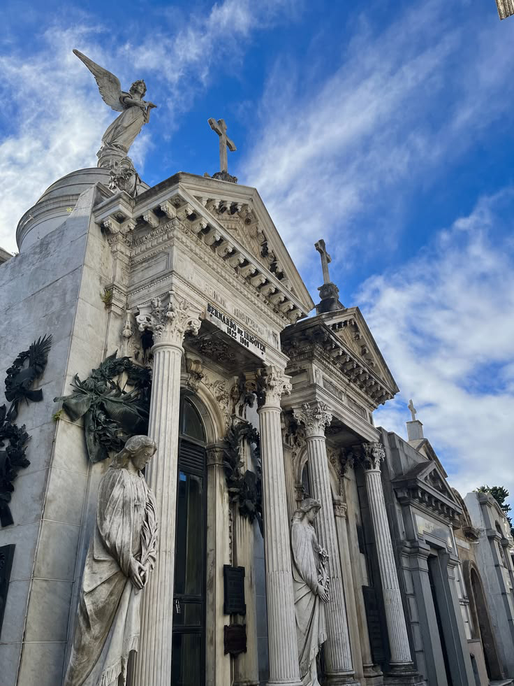
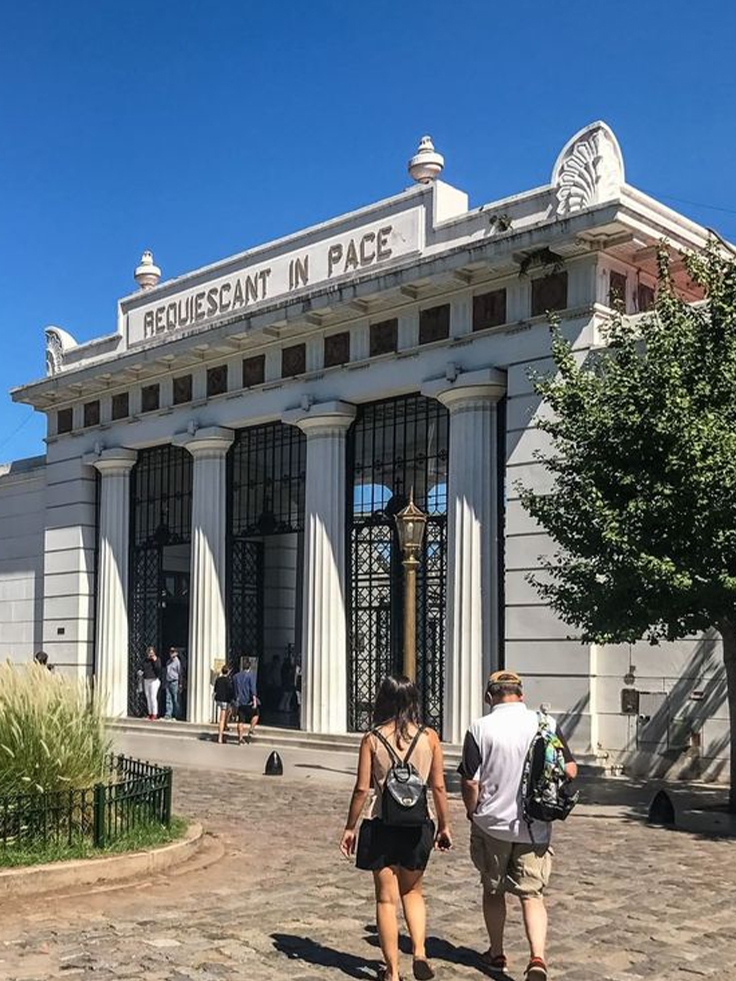

Cementerio
de la Recoleta
Junín 1760
El Cementerio de la Recoleta, desde su creación en 1822 como el primer cementerio público de la
ciudad, en museo a cielo abierto que resguarda la historia, la arquitectura y el arte funerario
de Argentina. Declarado Monumento Nacional, sus más de 4700 bóvedas y panteones albergan los
restos de las personalidades más influyentes de la política, la cultura y la historia nacional.
En sus casi 6 hectáreas conviven imponentes obras escultóricas de estilo neogótico, en decó
y
barroco, firmadas por reconocidos artistas locales e internacionales.

Recoleta Monumental: Mapa del Visitante

Puntos de interés: tumbas de próceres y personalidades
- Aurelio, Carlos M.
- Domingo, Manuel C. R.
- De Brandsen, Carlos L. F.
- Palacios, Alfredo L. H.
- Brown, Guillermo
- Escalada de San Martín, M. R.
- Alberdi, Juan Bautista
- De Rosas, Juan Manuel
- Pellegrini, Carlos E.
- Ocampo, V. Victoria E. R.
- Alsina, Adolfo
- Lavalle, Juan G.
- Fernández, Hilario H.
- Familia Herrera Noble
- Hernández, José F.
- Félix Ramón L.
- Quintana, Carlos E.
- Ase-Jareche, Wences
- Luisa L. Subifielda
- Colika, Cabañecce
- Colla, Villa Viale
- Carranza, Domingo F.
- Duarte de Perón, Eva
- Mitre, Bartolomé
Es bueno saber que...
Este espacio cuenta con visitas guiadas históricas, circuitos de arquitectura funeraria, códigos QR informativos en las principales bóvedas y un sector de acceso general gratuito.
Horario
Lunes a domingo de 9 a 17 hs
(Horario de franja turística).
Ingreso
Residentes en Argentina: sin cargo (presentando DNI)
No residentes en Argentina:
$24.000
Sin cargo: Jubilados residentes, estudiantes y personas con discapacidad.






Más que un cementerio
Entre callejones de mármol, esculturas centenarias y símbolos masónicos, este espacio trasciende su función original para convertirse en un museo a cielo abierto. Es un territorio donde la arquitectura dialoga con el arte funerario y la historia colectiva de la ciudad, resguardando la memoria de figuras emblemáticas que moldearon nuestra identidad cultural y social.
Más información